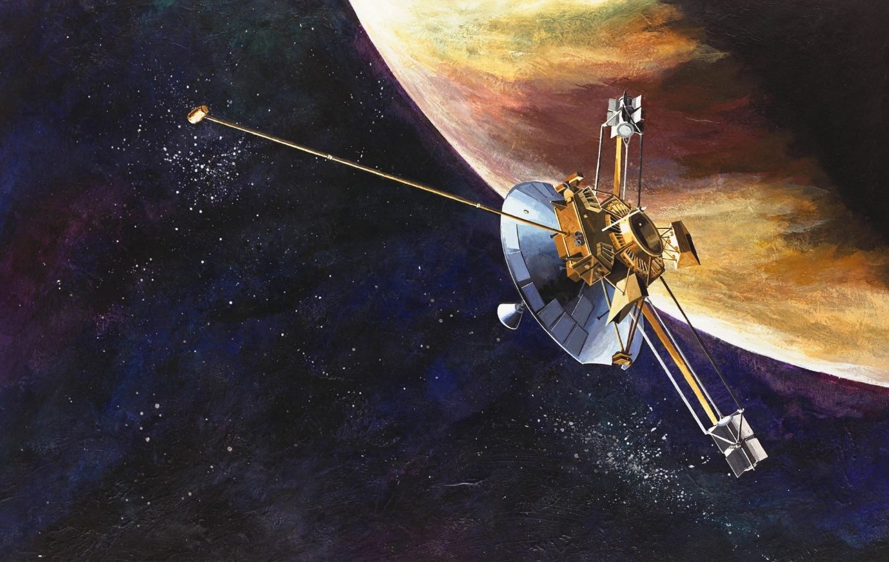
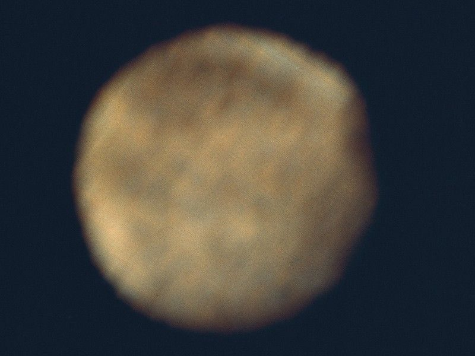
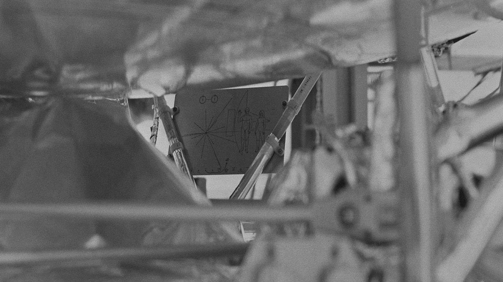

Home / Deep space / Pioneer 10 and 11
Pioneer 10 and 11
The first travellers to the outer planets, now drifting between stars.
Deep space1972-2003Leaving the Solar System

At a glance
| Pioneer 10 launch | 2 Mar 1972 |
|---|---|
| Pioneer 11 launch | 6 Apr 1973 |
| Mass | about 258 kg |
| Power | four radioisotope generators |
| Dish | about 2.7 m |
Overview
Pioneer 10 was the first spacecraft through the asteroid belt, proving dust there was not a hazard. Pioneer 11 then flew close to Saturn's rings and found the planet's strong magnetic field. Their discoveries helped design Voyager.
Pioneer 10 was NASA's first mission to the outer planets. The mission was a spectacular success and the spacecraft notched a series of firsts unmatched by any other robotic spacecraft to date.
Originally designed for a 21-month mission to fly by Jupiter, Pioneer 10 lasted more than 30 years.
Pioneer 10 sent its last signal to Earth in January 2003 from a distance of 7.6 billion miles (12.23 billion kilometers).
Where it began
Pioneer 10, launched in 1972, was the first spacecraft sent through the asteroid belt. Pioneer 11 followed in 1973.
Pioneer 10, the first NASA mission to the outer planets, garnered a series of firsts perhaps unmatched by any other robotic spacecraft in the space era: the first vehicle placed on a trajectory to escape the solar system into interstellar space; the first spacecraft to fly beyond Mars; the first to fly through the asteroid belt; the first to fly past Jupiter; and the first to use all-nuclear electrical power (two SNAP-19 radioisotope thermal generators [RTGs] capable of delivering about 140 W during the Jupiter encounter).
After launch by a three-stage version of the Atlas Centaur (with a TE-M-364-4 solid propellant engine modified from the Surveyor lander), Pioneer 10 reached a maximum escape velocity of 32,110 miles per hour (51,682 kilometers per hour), faster than any previous human-made object at that point in time.
Controllers carried out two course corrections, on March 7 and March 26, the latter to ensure an occultation experiment with Jupiter’s moon Io.
There were some initial problems during the outbound voyage when direct sunlight caused heating problems, but nothing to endanger the mission.
The mission
Pioneer 10 flew by Jupiter in December 1973. Pioneer 11 used Jupiter's gravity to swing on to Saturn, arriving in 1979.
On July 15, 1972, the spacecraft entered the asteroid belt, emerging in February 1973 after a voyage of about 271 million miles (435 million kilometers).
During this period, the spacecraft encountered some asteroid hits, although fewer than expected, and also measured the intensity of Zodiacal light in interplanetary space.
In conjunction with Pioneer 9 (in solar orbit), on Aug. 7, Pioneer 10 recorded details of one of the most violent solar storms in recent record.
At 20:30 UT Nov. 26, the spacecraft reported a decrease in the solar wind and a 100-fold increase in temperature indicating that it was passing through the front of Jupiter’s bow shock. In other words, it had entered Jupiter’s magnetosphere.
By Dec. 1, Pioneer 10 was returning better images of the planet than possible from Earth. (It had already begun imaging as early as Nov. 6, 1973). Command-and-return time was up to 92 minutes by this time.
Pioneer 10’s closest approach to Jupiter was at 02:26 UT Dec. 4, 1973, when the spacecraft raced by the planet at a range of 81,000 miles (130,354 kilometers) at a velocity of approximately 78,000 miles per hour (126,000 kilometers/hour).
The spacecraft passed by a series of Jovian moons, obtaining photos of Callisto, Ganymede, and Europa (but not of Io, as the photopolarimeter succumbed to radiation by that time).

Approximately 78 minutes after the closest approach, Pioneer 10 passed behind Jupiter’s limb for a radio occultation experiment. In addition, the infrared radiometer provided further information on the planet’s atmosphere.
Between Nov. 6 and 31 Dec. 31, the spacecraft took about 500 pictures of Jupiter’s atmosphere with the highest resolution of about 200 miles (320 kilometers), clearly showing such landmarks as the Great Red Spot.
The Jupiter encounter was declared over Jan. 2, 1974.
How it worked
Pioneers measured radiation, magnetic fields, particles and took pictures. Both carry a gold plaque showing a man and woman and the Sun's location, a greeting for anyone who finds it.
Of the spacecraft’s 11 scientific instruments, 6 operated continuously through the encounter.
What it found
They revealed Jupiter's intense radiation belts, which shaped the design of later probes. They also proved a spacecraft could survive the asteroid belt.
Pioneer 10 fulfilled all objectives except one due to false commands triggered by Jupiter’s intense radiation. Based on the data, scientists identified plasma in Jupiter’s magnetic field.
The spacecraft crossed Saturn’s orbit in February 1976, recording data that indicated that Jupiter’s enormous magnetic tail, almost 800 million kilometers long, covered the whole distance between the two planets.
Still operating nominally, Pioneer 10 crossed the orbit of Neptune (then the outermost planet) on June 13, 1983, thus becoming the first human-made object to go beyond the furthest planet.
Why it was left behind
Their nuclear power sources faded for decades. Pioneer 11 stopped sending data in 1995, and Pioneer 10's last signal arrived in 2003.
NASA maintained routine contact with Pioneer 10 for over two decades until 19:35 UT March 31, 1997, (when the spacecraft was 67 AU from Earth) when routine contact was terminated due to budgetary reasons.
Intermittent contact, however, continued, but only as permitted by the onboard power source, with data collections from the Geiger tube telescope and the charged particle instrument.
Until Feb. 17, 1998, Pioneer 10 was the farthest human-made object in existence (69.4 AU) when it was passed by Voyager 1.
A NASA ground team received a signal on the state of spacecraft systems (still nominal) Aug. 5, 2000. The spacecraft returned its last telemetry data April 27, 2002, and less than a year later, on Jan. 23, 2003, it sent its last signal when it was 7.6 billion miles (12.23 billion kilometers from Earth.
That signal took 11 hours and 20 minutes to reach Earth. By that time, it was clear that the spacecraft’s RTG power source had decayed, thus delivering insufficient power to the radio transmitter.
A final attempt to contact Pioneer 10 on March 4, 2006, failed.
Where it is now
Both are coasting out of the Solar System. Pioneer 10 is headed toward the star Aldebaran, and would take around two million years to get there.
By Nov. 5, 2017, the inert Pioneer 10 spacecraft was roughly 118.824 AUs (about 11 billion miles or 17.7 billion kilometers) from Earth, a range second only to Voyager 1.
The spacecraft is generally heading in the direction of the red star Aldebaran which forms the eye of the Taurus constellation. It is expected to pass by Aldebaran in about two million years.
Pioneer 10 is heading out of the solar system in a direction very different from the two Voyager probes and Pioneer 11, i.e., towards the nose of the heliosphere in an upstream direction relative to the inflowing interstellar gas.
In case its intercepted by intelligent life, Pioneer 10 carries an aluminum plaque with diagrams of a man and a woman, the solar system, and its location relative to 14 pulsars. The expectation is that intelligent beings would be able to interpret the diagram to determine the position of the Sun— and thus, Earth— at the time of launch relative to the pulsars.

The plaque on each craft was designed by Carl Sagan and Frank Drake, with artwork by Linda Salzman Sagan. Decades later scientists puzzled over a tiny unexplained deceleration, later explained by heat from the spacecraft. For a time Pioneer 10 was the most distant human-made object until Voyager 1 passed it in 1998.
Timeline of events
- 3 Dec 1973 Pioneer 10 passes Jupiter
- 2 Dec 1974 Pioneer 11 passes Jupiter
- 1 Sep 1979 Pioneer 11 flies by Saturn
- 30 Sep 1995 Pioneer 11 mission ends
- 23 Jan 2003 Last signal from Pioneer 10
2003
Pioneer 10's last faint signal, 23 January (Pioneer 11 lost 1995).
Read more on NASAText and images adapted from NASA mission pages.